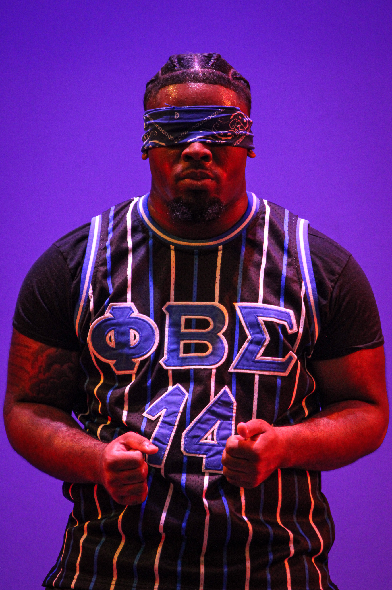
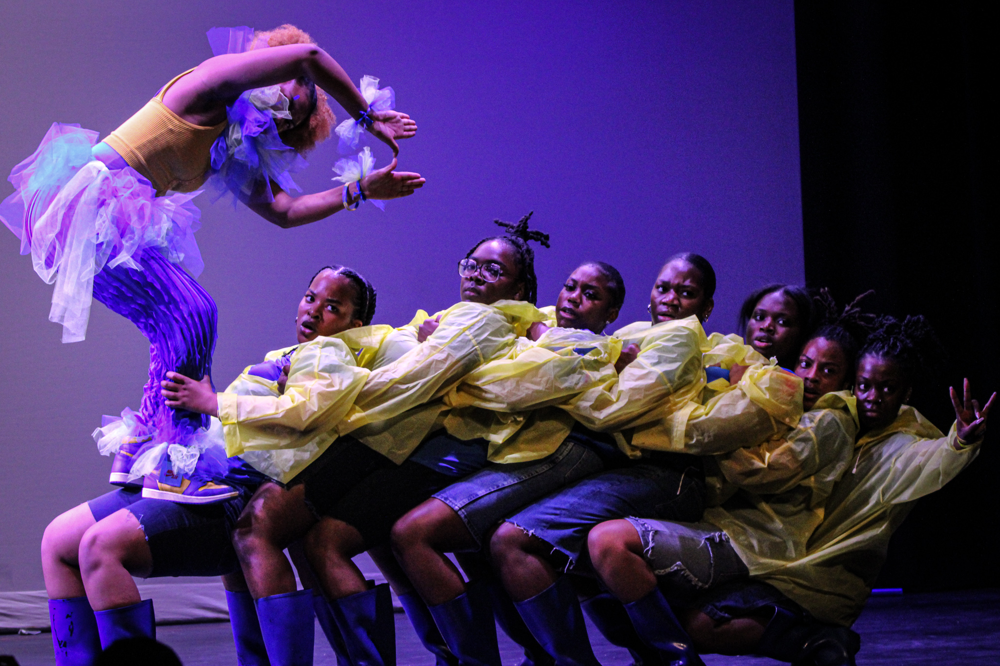
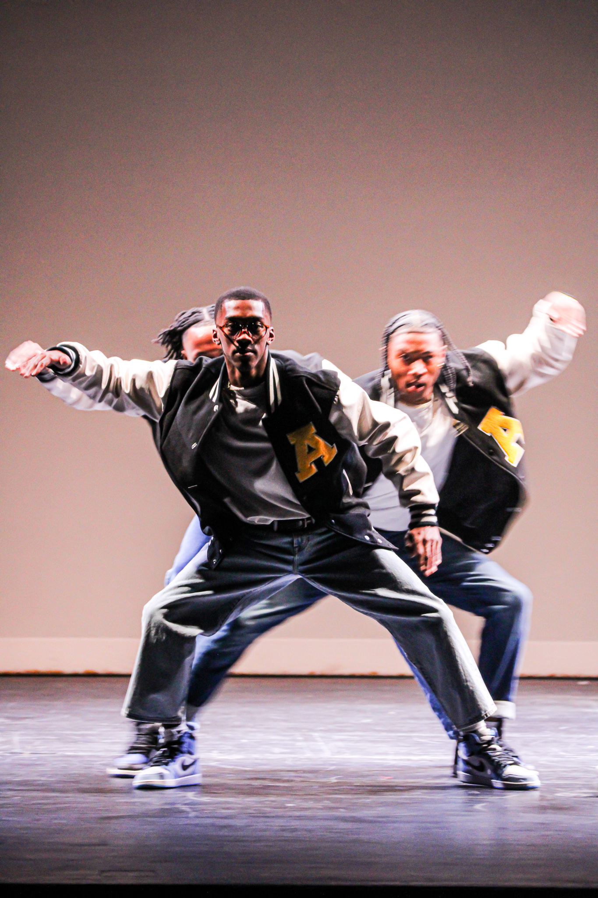
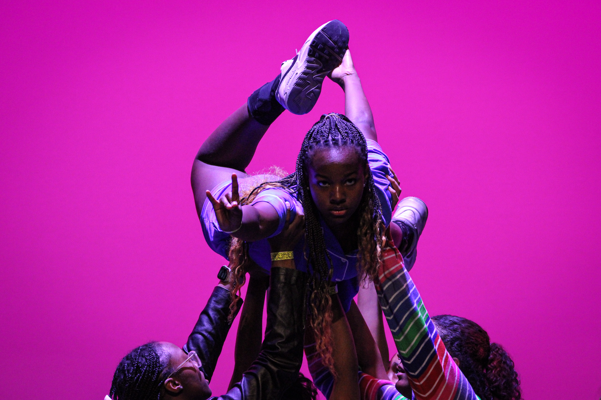
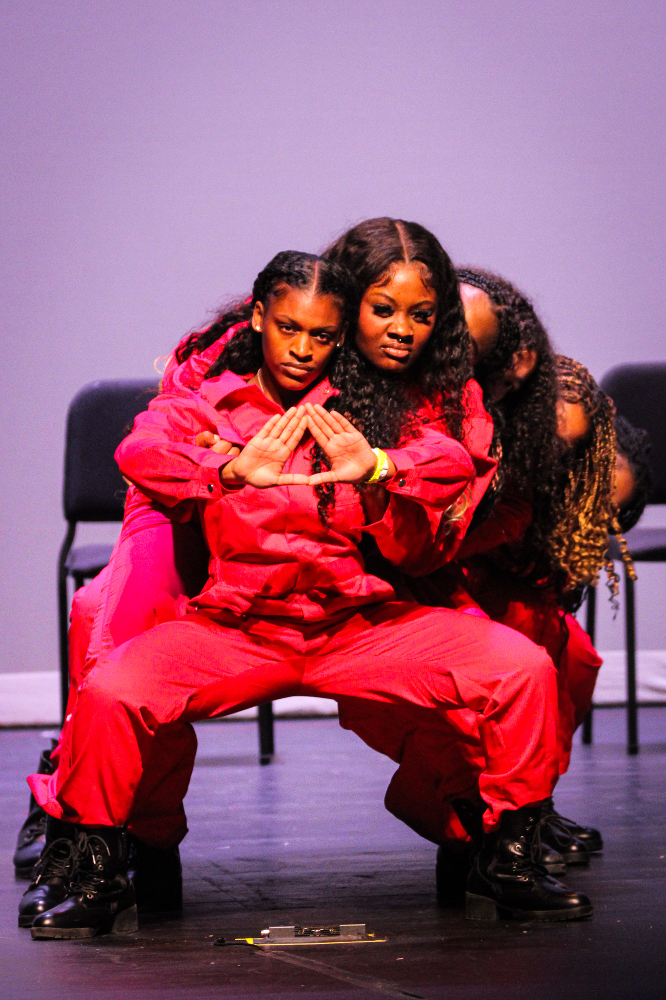
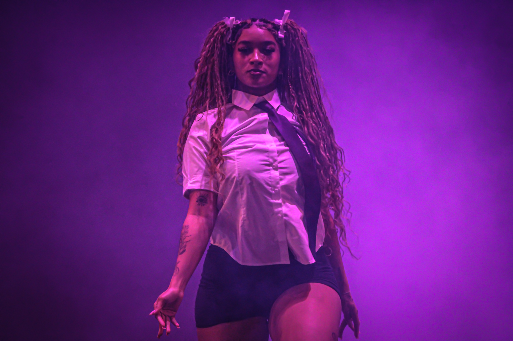
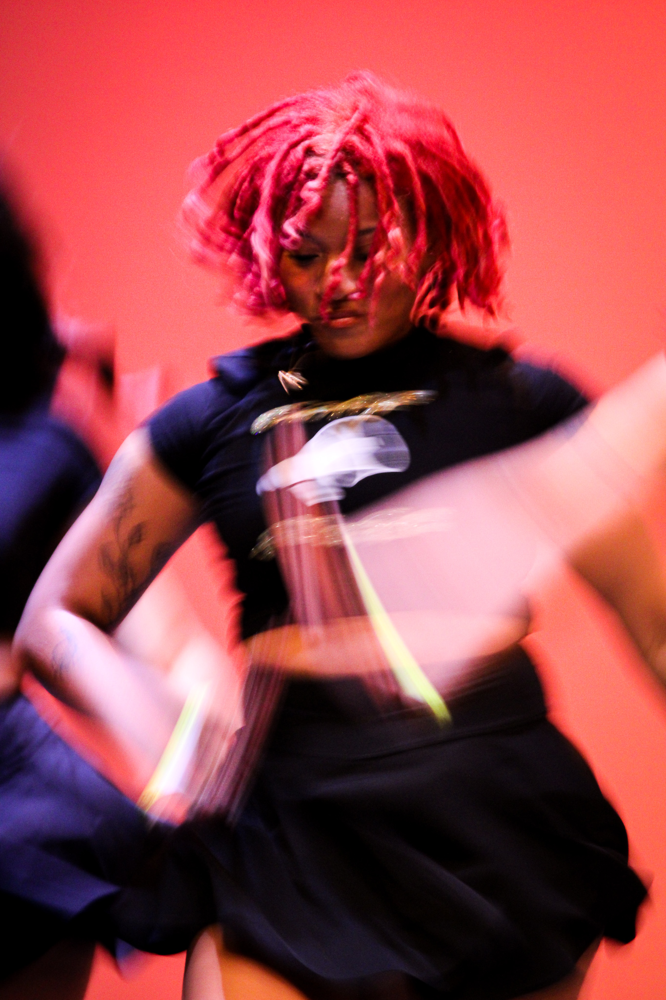
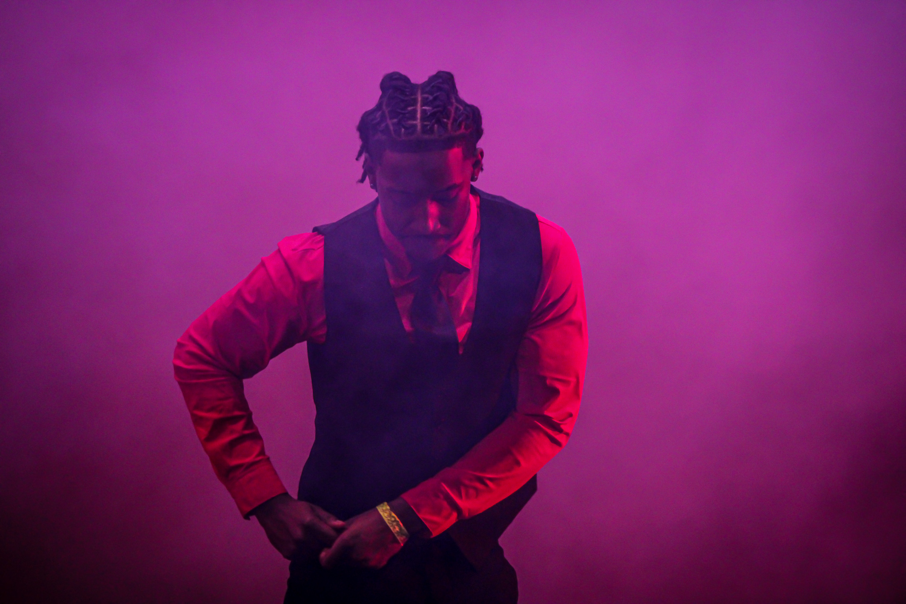

Every Year, the NPHC holds an annual Divine Nine Step Show for homecoming. The photos that are shown in this gallery are photos that I took this past year at the step show. Each year there are performances by each of the historically black fraternities and sororities, as well as special performances from the predominately black dance teams at the University of Missouri

Nolan Cobbs looks out to the crowd, in position during his Homecoming performance. Cobbs was initiated into Phi Sigma Beta at last year’s show. (Photo/ Aleigha Hornaday).

Sigma Gamma Rho holds each other up in stance at the 2024 Step Show. (Photo/ Aleigha Hornaday)

Members of Alpha Phi Alpha and three time step show winners, perform at the 2024 Homecoming Step Show. (Photo/ Aleigha Hornaday)

Members of the Chi Kappa Zetas perform at the 2024 show for the first time ever. The Zetas placed second for the sororities. (Photo/ Aleigha Hornaday)

The Delta Sigma Theta Sorority gets in formation at the end of their performance. (Photo/ Aleigha Hornaday)

Cianna Hernandez takes the stage with her dance team at Mizzou called FYE. Freestyle Your Expression is one of the two predominantly black dance teams at the university. (Photo/ Aleigha Hornaday)

Brianna Davis takes the stage with ZouShake, another pom/dance team at Mizzou. Zoushake does perfomances on campus and at other schools and participates in annual events like the Homecoming show and the end of the year yard show. (Photo/ Aleigha Hornaday)

Members of Kappa Alpha Psi, better known as the Nupes, take the stage with their iconic stroll. (Photo/ Aleigha Hornaday)